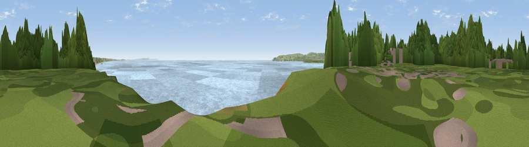

Viewpoint near Bournemouth
#21483 in England · top 35% of its area beats it · near BournemouthThe view, rendered

A 360° render of this exact spot computed from the terrain model, tree cover and land cover — summer colours, afternoon light, calibrated against photographs of famous viewpoints. Real trees, hedges and buildings will differ in detail.
The panorama
Grey silhouette: terrain skyline in each direction (720 bearings, Earth curvature and refraction included). Dashed green: skyline with trees (+15 m) and buildings (+8 m) as obstacles. Blue strip: how far the ground is visible on each bearing.
Where the view opens
Wedge length = distance to the farthest visible ground on that bearing (vegetation-aware). Rings at 10, 25 and 50 km.
What fills the view
71% water · 14% bare ground · 11% woodland · 3% grassland · 1% built-up
Angular shares of the visible panorama (visual magnitude), not map area. Landscape diversity 0.40 (0–1 Shannon).
Key numbers
More beautiful places nearby
The staircase of upgrades: each row has a higher view potential than everything closer. Driving times are estimates from straight-line distance, calibrated against real road routing — check an actual route before setting out.
| Place | Direction | Drive | Score |
|---|---|---|---|
| Viewpoint near Bournemouth | ENE · 4 km | ~9 min | 54.2 |
| Viewpoint near Poole | NW · 4 km | ~10 min | 55.7 |
| Viewpoint near Studland | S · 8 km | ~15 min | 62.6 |
| Viewpoint near Studland | SSW · 8 km | ~17 min | 80.9 |
| Viewpoint near Studland | SSW · 8 km | ~17 min | 82.2 |
| Ballard Down | SSW · 9 km | ~18 min | 83.2 |
| Viewpoint near Harman's Cross | SSW · 10 km | ~19 min | 84.1 |
| Viewpoint near Worth Matravers | SW · 16 km | ~29 min | 86.0 |
50.70443, -1.91534 · source: screening · position refined by local search. Computed location — check access rights before visiting.